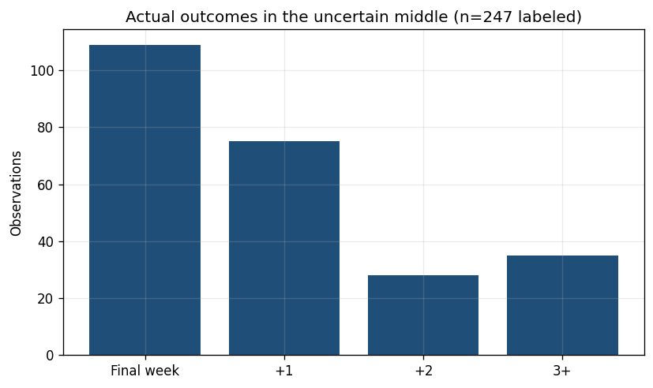
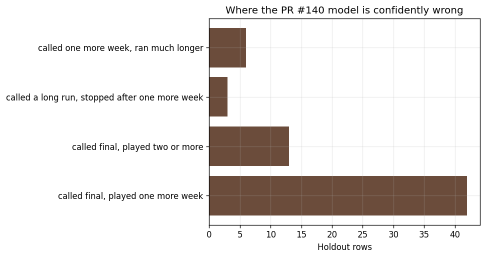
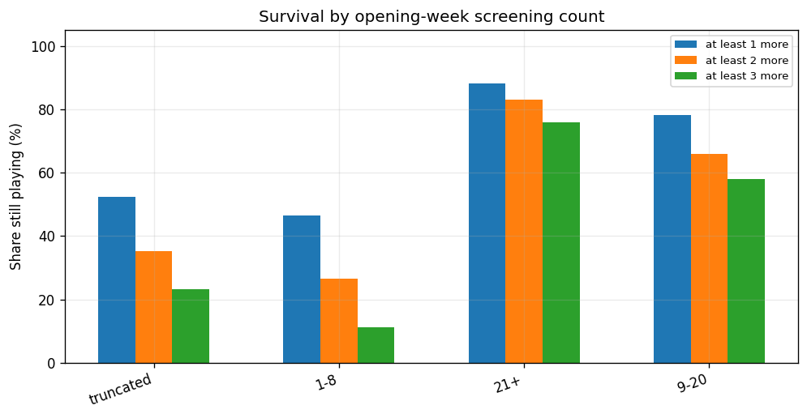
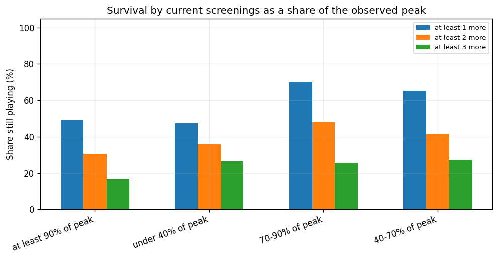
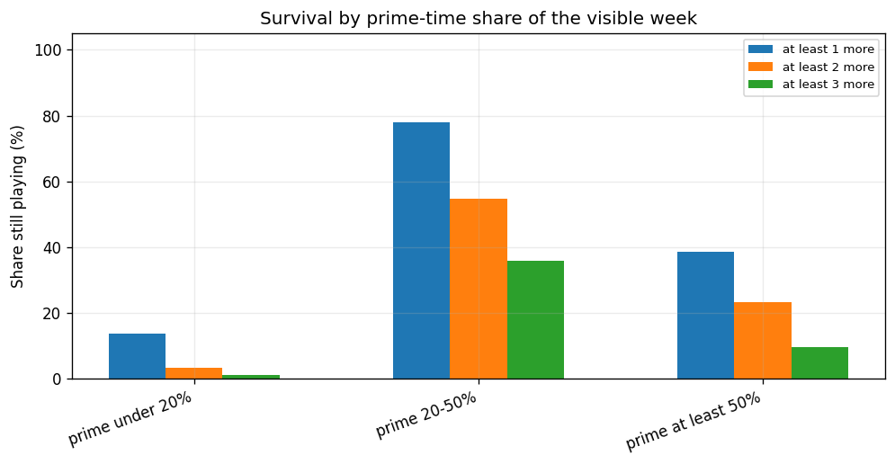
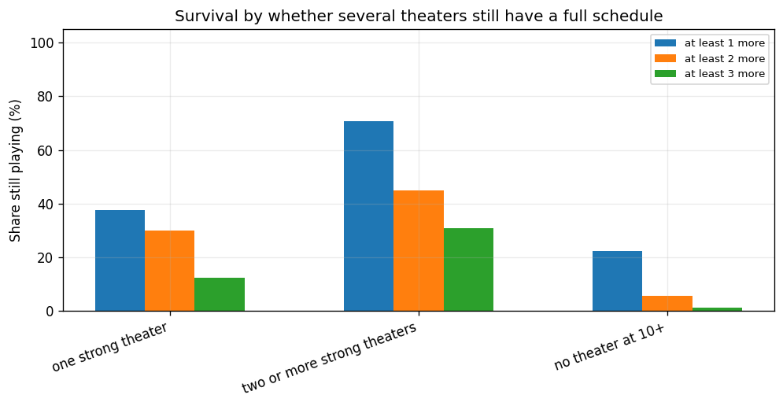
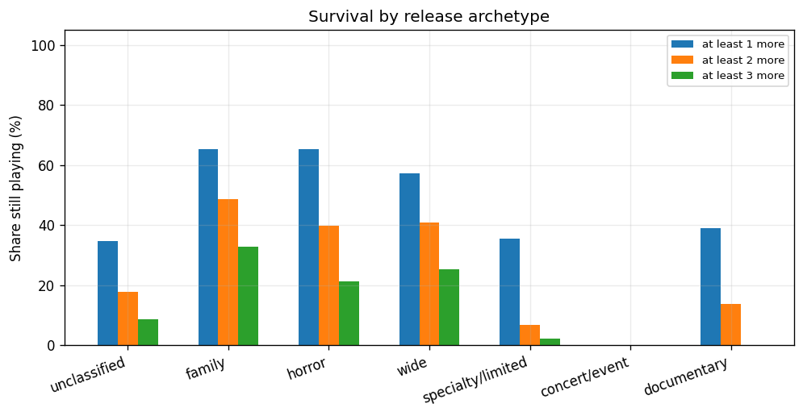
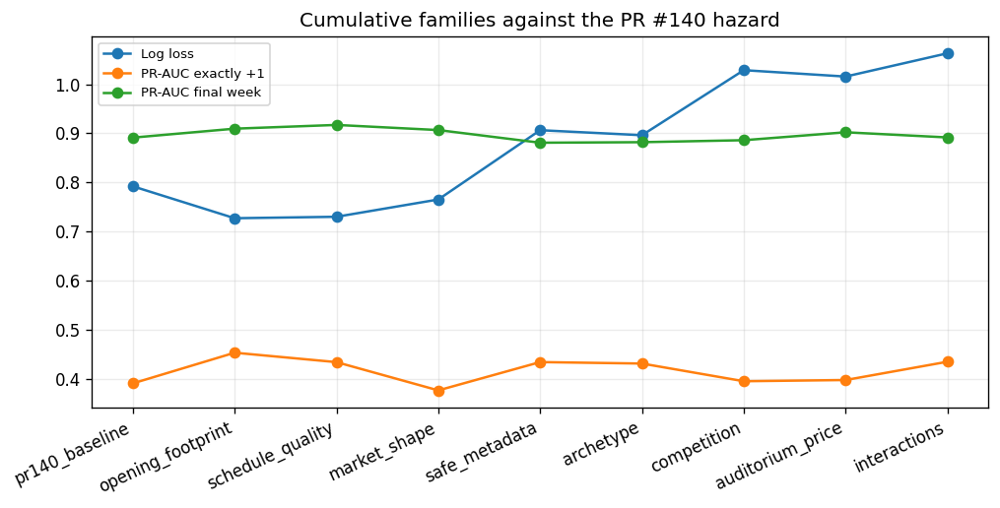
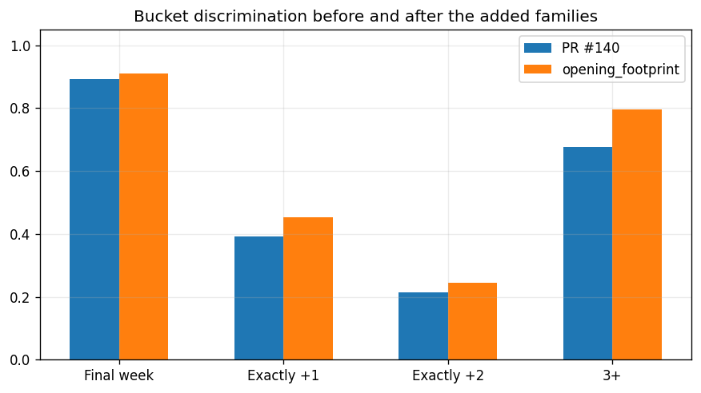

Same pre-publication snapshot as PR #140. Train through 2026-08-16, validation through 2026-09-06, holdout after that. Production Leaving Soon is unchanged.
The PR #140 hazard already reaches final-week PR-AUC 0.891 and pairwise ranking 85.3%. Exactly one more week is 0.391. Exactly two is 0.213 on a small holdout cell. The uncertain middle in this audit has 335 rows.


The showtimes payload has been probed on 29 June, 1 August, 3 September, and 1 October 2026. Adult ticket price and auditorium number are in the daily logs from 19 July. Seat capacity (`maximumIntendedAttendance`) is present as a key and empty. `isAlmostSoldOut` is stored for the whole window and true on well under 2% of showtimes. `isSoldOut` is true a handful of times a day. There is no seat map or seats-remaining field in the showtimes response.
| Snapshot | Showtimes | Almost sold out | Sold out | Auditorium captured | Prices captured |
|---|---|---|---|---|---|
| 2026-06-29 | 3517 | 0 | 0 | False | False |
| 2026-08-01 | 3768 | 41 | 4 | True | True |
| 2026-09-03 | 6831 | 17 | 6 | True | True |
| 2026-10-01 | 7049 | 21 | 5 | True | True |
Stable language, genres, runtime, and release date are joined from the stored enrichment and confirmed matches. Language is known on 2 of 1907 pre-publication rows. Adult price matched on 1284 rows. Current popularity, vote count, vote average, revenue, and budget are not used.
| Field | Class | Why |
|---|---|---|
| original_language | safe | Stable. Stored on matched films in film_enrichment_current.json. |
| genres | safe | Stable list. Stored on matched films. |
| runtime | safe | Stable. AMC runtime is preferred; TMDB fills gaps. |
| release_date | safe | Stable. Used only when the date is on or before the snapshot. |
| us_certification | safe | Stored, but AMC MPAA rating is the field actually modeled. |
| original_title vs display_title | safe | Stable identity. Not separately modeled. |
| belongs_to_collection | uncertain | Stable enough to reconstruct, but this repo does not store it. Not fetched live for this audit. |
| production_companies | uncertain | Usually stable, not stored. AMC distributor code is the stored studio-like field and was left out for cardinality. |
| popularity | unsafe | Changes daily. A current value cannot score a past week. |
| vote_count | unsafe | Grows after release. Needs a historical snapshot. |
| vote_average | unsafe | Moves as votes arrive. |
| revenue | unsafe | Updated after the theatrical run. Hindsight. |
| budget | unsafe | Often filled in or revised after release. |
| person popularity | unsafe | Current person popularity is not the value at prediction time. |

| Opening week | N | At least 1 | N | At least 2 | At least 3 |
|---|---|---|---|---|---|
| truncated | 518 | 52.3% | 518 | 35.3% | 23.2% |
| 1-8 | 1206 | 46.5% | 1204 | 26.5% | 11.1% |
| 21+ | 59 | 88.1% | 59 | 83.1% | 75.9% |
| 9-20 | 124 | 78.2% | 124 | 65.9% | 57.9% |


| Friday or Saturday evening | N | At least 1 | At least 2 | At least 3 |
|---|---|---|---|---|
| no friday/saturday evening | 1047 | 37.0% | 25.7% | 12.6% |
| some friday/saturday evening | 860 | 69.1% | 42.8% | 28.3% |

| Shape | N | At least 1 | At least 2 | At least 3 |
|---|---|---|---|---|
| one strong theater | 650 | 37.7% | 29.9% | 12.5% |
| two or more strong theaters | 944 | 70.6% | 45.1% | 30.8% |
| no theater at 10+ | 313 | 22.4% | 5.8% | 1.3% |

| Archetype | N | At least 1 | N | At least 2 | At least 3 |
|---|---|---|---|---|---|
| unclassified | 508 | 34.8% | 506 | 17.9% | 8.7% |
| family | 248 | 65.3% | 248 | 48.5% | 32.9% |
| horror | 162 | 65.4% | 162 | 39.8% | 21.2% |
| wide | 855 | 57.3% | 855 | 40.9% | 25.3% |
| specialty/limited | 90 | 35.6% | 90 | 6.9% | 2.4% |
| concert/event | 8 | 0.0% | 8 | 0.0% | 0.0% |
| documentary | 36 | 38.9% | 36 | 13.9% | 0.0% |
The new competition block counts national titles whose AMC release date falls in the upcoming week and that this catalog had already seen, plus advance showtimes already on sale at the theater. A separate run adds whether the incumbent itself already lists showtimes beyond the next week. That last flag is known future commitment, not a forecast from schedule shape. Both are in the results table.
Stage 1 is the chance the visible week is the last. Stage 2 splits the survivors into exactly one more week, exactly two, and three or more. Holdout log loss 1.168, exactly +1 PR-AUC 0.469, exactly +2 0.286, final week 0.894. The single weekly hazard on the PR #140 features has log loss 0.792.
A separate opening-week hazard, fit only on first-week rows, has holdout log loss 0.548 against 0.475 for the general model on the same 211 rows.
The selected expanded model is opening_footprint. Log loss moves from 0.792 to 0.727. Exactly +1 moves from 0.391 to 0.454. Exactly +2 moves from 0.213 to 0.245. Final week moves from 0.891 to 0.910. Pairwise ranking moves from 85.3% to 87.7%.
Bootstrap of the holdout, 400 draws of 405 paired rows: log-loss delta mean -0.065 (interval -0.106 to -0.026). Exactly-+1 delta mean 0.065 (interval -0.018 to 0.142). A interval that crosses zero is a change this holdout cannot pin down.


| Model | How added | N | Log loss | Brier | Final week | Exactly +1 | Exactly +2 | 3+ | Median week error | Pairwise rank |
|---|---|---|---|---|---|---|---|---|---|---|
| pr140_baseline | baseline | 405 | 0.792 | 0.399 | 89.1% | 39.1% | 21.3% | 67.7% | 0.308 | 85.3% |
| opening_footprint | cumulative | 405 | 0.727 | 0.354 | 91.0% | 45.4% | 24.5% | 79.6% | 0.207 | 87.7% |
| opening_footprint | added_alone | 405 | 0.727 | 0.354 | 91.0% | 45.4% | 24.5% | 79.6% | 0.207 | 87.7% |
| schedule_quality | cumulative | 405 | 0.730 | 0.357 | 91.7% | 43.5% | 22.2% | 79.4% | 0.208 | 87.7% |
| schedule_quality | added_alone | 405 | 0.793 | 0.402 | 89.3% | 39.7% | 19.4% | 68.2% | 0.301 | 85.1% |
| market_shape | cumulative | 405 | 0.765 | 0.379 | 90.7% | 37.7% | 18.3% | 79.3% | 0.250 | 87.7% |
| market_shape | added_alone | 405 | 0.817 | 0.413 | 87.7% | 35.9% | 17.8% | 70.9% | 0.311 | 84.6% |
| safe_metadata | cumulative | 405 | 0.906 | 0.396 | 88.1% | 43.5% | 26.3% | 74.3% | 0.247 | 84.5% |
| safe_metadata | added_alone | 405 | 1.035 | 0.453 | 87.0% | 33.7% | 19.6% | 55.1% | 0.334 | 79.8% |
| archetype | cumulative | 405 | 0.896 | 0.396 | 88.2% | 43.2% | 23.4% | 75.0% | 0.253 | 84.2% |
| archetype | added_alone | 405 | 0.880 | 0.432 | 87.6% | 36.9% | 24.6% | 61.9% | 0.315 | 82.6% |
| competition | cumulative | 405 | 1.029 | 0.409 | 88.6% | 39.6% | 24.3% | 74.2% | 0.117 | 84.2% |
| competition | added_alone | 405 | 0.819 | 0.403 | 88.6% | 41.5% | 26.2% | 73.5% | 0.209 | 85.8% |
| auditorium_price | cumulative | 405 | 1.016 | 0.405 | 90.2% | 39.8% | 27.6% | 75.8% | 0.121 | 85.0% |
| auditorium_price | added_alone | 405 | 0.756 | 0.385 | 90.3% | 42.1% | 28.7% | 73.8% | 0.278 | 86.8% |
| interactions | cumulative | 405 | 1.063 | 0.411 | 89.2% | 43.5% | 32.2% | 75.9% | 0.107 | 84.2% |
| interactions | added_alone | 405 | 0.776 | 0.386 | 89.3% | 39.3% | 22.9% | 71.9% | 0.283 | 86.0% |
| known_future_commitment | added_alone_to_full | 405 | 1.067 | 0.412 | 89.1% | 42.5% | 32.0% | 75.8% | 0.105 | 84.2% |
These are the PR #140 model's confident mistakes on the holdout. The named rows are the highest-confidence examples.
| Film | Theater | Snapshot | Miss | Segment | Archetype | This week | Opening | Theaters | P(final) | Actual bucket |
|---|---|---|---|---|---|---|---|---|---|---|
| Cars: 20th Anniversary | AMC Woodinville 12 | 2026-09-08 | called final, played one more week | rerelease | family | 6.000 | 1.000 | 4.000 | 0.999 | 1 |
| Cars: 20th Anniversary | AMC Alderwood Mall 16 | 2026-09-08 | called final, played one more week | rerelease | family | 16.000 | 3.000 | 4.000 | 0.980 | 1 |
| Coyote vs. Acme | AMC Oak Tree 6 | 2026-09-15 | called final, played one more week | ambiguous_special | wide | 19.000 | 3.000 | 7.000 | 0.914 | 1 |
| Mighty Mary | AMC Pacific Place 11 | 2026-09-15 | called final, played one more week | ordinary | documentary | 14.000 | 14.000 | 1.000 | 0.909 | 1 |
| Cars: 20th Anniversary | AMC Southcenter 16 | 2026-09-08 | called final, played one more week | rerelease | family | 17.000 | 3.000 | 4.000 | 0.909 | 1 |
| Cars: 20th Anniversary | AMC Kent Station 14 | 2026-09-08 | called final, played one more week | rerelease | family | 20.000 | 3.000 | 4.000 | 0.905 | 1 |
| Dear You | AMC Pacific Place 11 | 2026-09-08 | called final, played two or more | ordinary | specialty/limited | 26.000 | 3.000 | 1.000 | 0.901 | 2 |
| Dear You | AMC Pacific Place 11 | 2026-09-15 | called final, played one more week | ordinary | specialty/limited | 19.000 | 3.000 | 1.000 | 0.892 | 1 |
| Coyote vs. Acme | AMC Oak Tree 6 | 2026-09-08 | called final, played two or more | ambiguous_special | wide | 20.000 | 3.000 | 7.000 | 0.881 | 2 |
| Coyote vs. Acme | AMC Factoria 8 | 2026-09-08 | called final, played two or more | ambiguous_special | wide | 27.000 | 5.000 | 7.000 | 0.848 | 3 |
| Teenage Sex and Death at Camp Miasma | AMC Pacific Place 11 | 2026-09-08 | called final, played one more week | ordinary | horror | 11.000 | 2.000 | 1.000 | 0.846 | 1 |
| MST3K: The RiffTrax Experiments - Sting of Death | AMC Woodinville 12 | 2026-09-08 | called final, played one more week | special_event | wide | 1.000 | 1.000 | 4.000 | 0.845 | 1 |
The signal this history cannot supply is demand on a thin schedule: how full those six shows are. AMC's showtimes payload does not include a seat map, and the capacity field it does include is empty. `isAlmostSoldOut` is already logged and almost never true, so it is a weak substitute. The collection note in this folder is the plan. Nothing here is wired into production scoring.
Direct market model with the new film-level fields: log loss 0.884, exactly +1 0.486, against the PR #140 market feature set at log loss 0.763.
Keep the weekly hazard. The added families are worth keeping only where the holdout log loss and the exactly-+1 number move together and the bootstrap interval stays on one side of zero. Do not stand up a separate opening-week model unless that comparison above is clearly better. Start a research log of adult price, auditorium id, and any future seat-availability field, and start a weekly snapshot of TMDB popularity and vote count. Evaluate those only after they have their own history.